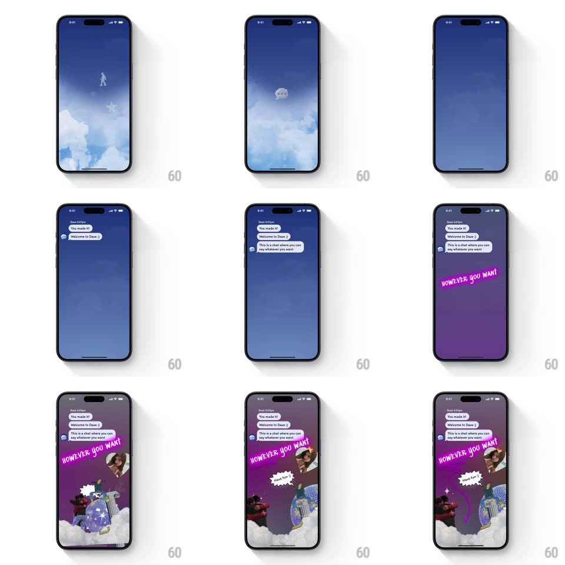

Media
Frame-by-frame

Rebuild this interaction 1:1: Daze's onboarding intro - a dreamy blue cloudscape where doodles (flamingo, walking figure, speech cloud) drift by, chat bubbles stack in one at a time ("You made it!", "Welcome to Daze :)", "This is a chat where you can say whatever you want"), then the sky shifts to purple as a chaotic collage of stickers, photos, and neon "HOWEVER YOU WANT" text assembles over clouds.

Rebuild this interaction 1:1: Daze's onboarding intro - a dreamy blue cloudscape where doodles (flamingo, walking figure, speech cloud) drift by, chat bubbles stack in one at a time ("You made it!", "Welcome to Daze :)", "This is a chat where you can say whatever you want"), then the sky shifts to purple as a chaotic collage of stickers, photos, and neon "HOWEVER YOU WANT" text assembles over clouds.
## Integration
Integration: stack-agnostic spec - springs given as stiffness/damping, timed motions as duration + curve; map every value to your framework and animation library of choice.
## Scene
Full-screen sky gradient (blue to deep purple across the sequence). Actors: white line doodles floating in the sky, a top-left chat thread ("Daze 9:41pm") with incoming bubbles, and a final collage layer: torn photos, sticker cutouts, lightning doodle, a comic "WOW! THAT'S HOW?" burst, and a slanted neon pink banner.
## Motion spec
Pattern: multi-stage atmosphere shift with choreographed collage.
- Doodle drift: each doodle floats across the sky on a slow path (~3-4s, ease-in-out) and dissolves (300ms) as the next appears.
- Chat: bubbles pop in one at a time from the left (scale 0.8 -> 1, spring ~380/20, ~600ms apart), each with a tiny avatar.
- Sky tint: background gradient tweens from blue to purple over ~1.5s as the collage begins.
- Collage: elements fly in from off-screen edges with rotation (300-500ms each, springs ~280/20, staggered ~150ms), overlapping with torn-paper edges; the pink "HOWEVER YOU WANT" banner slams in last, rotated ~-8deg (spring ~240/14, visible overshoot).
## Calibration
- The collage is intentionally messy - varied rotations and overlaps, no grid.
- Chat bubbles keep iMessage-style tails and stay legible over the sky.
## Reduced motion
Sky crossfades blue -> purple; each element fades in place (200ms, staggered), no flight paths.
## Don't miss
- Doodles are single-weight white line art - no fills.
- The final composition must look layered: clouds behind, collage in front.